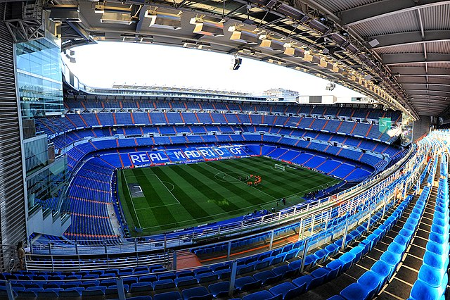
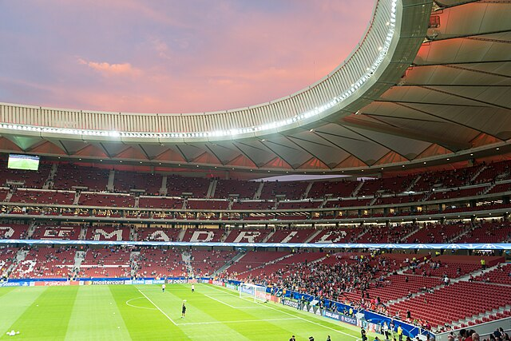

Madrid, Spain
Madrid is the home to one of the most famous soccer teams today; Real Madrid CF. Their stadium goes by the name of "Santiago Bernabéu" and seats 84,744 fans. It was inaugurated in the year 1947 and has become a world renowned stadium.
Madrid is also the home to another soccer team; Atlético de Madrid. Their stadium, "Metropolitano" seats 70,460 supporters and wasa founded in 1994.
